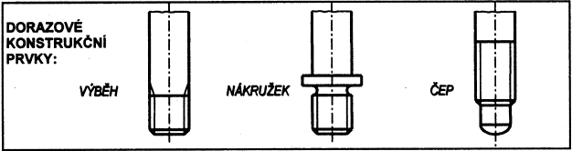

Kombinace tolerančních polí pro uložení přechodná
| Jmenovitý rozměr závitu d [mm] |
Materiál součástí s vnitřním závitem |
Uložení |
| od |
do |
| 5 |
16 |
ocel |
3H6H
2m |
2H6H
1k6h |
4H6H
4jk |
| litina |
5H6H
4jk
|
| slitiny Al a Mg |
2H6H
1mn6h |
| 18 |
30 |
ocel |
2H5H
1k6h |
4H6H
4j |
| litina |
5H6H
4j |
| slitiny Al a Mg |
2H5H
1mn6h |
| 33 |
45 |
ocel |
2H5H
1k6h |
5H6H
4jh |
| litina |
| slitiny Al a Mg |
- |
- Uložení přechodná jsou určena pro uložení zašroubovaných konců závrtných šroubů s konstrukčním prvkem pro doraz (výběh, nákružek apod., viz obrázky níže);
- Je dovoleno užít uložení 3H6H / 2m bez konstrukčního prvku pro doraz
- Uložení 2H6H / 1k6h je určeno pouze pro nahrazení dřívějšího uložení SH4, Sn3 pro závity do M 16 včetně;
- Uložení 2H6H / 1mn6h je určeno pouze pro nahrazení dřívějšího uložení SH4 / Sp3 pro závity do M 16 včetně;
- Od velikosti závitu M 16 včetně se užije uložení 2H5H / 1k6h místo dřívějšího SH4 / Sn3 a uložení 2H5H / 1mn6h místo dřívějšího SH4 / Sp3;
- Pro nové konstrukce jsou určena uložení stupně přesnosti středního průměru vnějšího závitu 2 a 4 a stupně přesnosti středního průměru vnitřního závitu 3, 4 a 5
